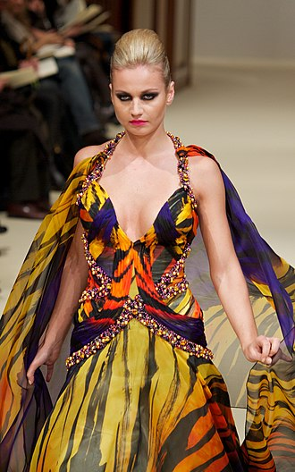
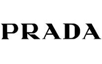
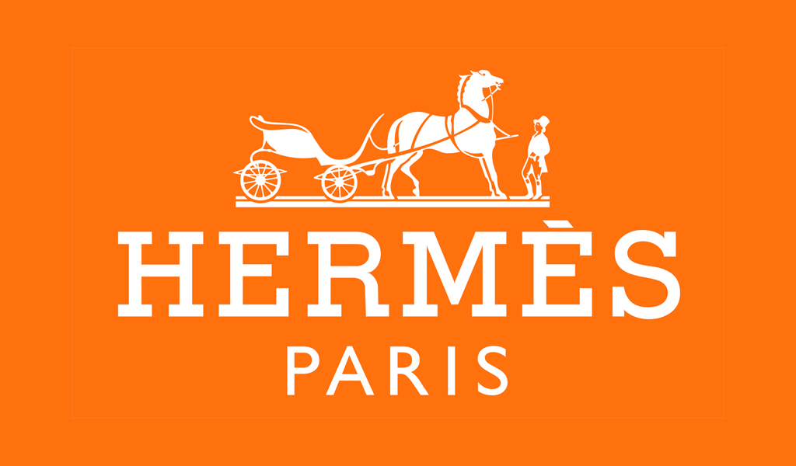
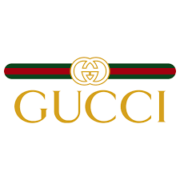

What is Fashion?
Fashion is a form of self-expression and autonomy at a particular period and place and in a specific context, of clothing, footwear, lifestyle, accessories, makeup, hairstyle, and body posture. The term implies a look defined by the fashion industry as that which is trending.


Fashion is defined in a number of different ways, and its application can be sometimes unclear. Though the term fashion connotes difference, as in "the new fashions of the season", it can also connote sameness, for example in reference to "the fashions of the 1960s", implying a general uniformity. Fashion can signify the latest trends, but may often reference fashions of a previous era, leading to the understanding of fashions from a different time period re-appearing. While what is fashionable can be defined by a relatively insular, esteemed and often rich aesthetic elite.
What is trends in fashion?
To set a trend means to do something that becomes accepted or fashionable, and that a lot of other people copy.
HISTORY OF FASHION
FASHION BRANDS
A brand with symbolic meaning and style that deeply incorporates the experiential and interactional dimensions.
Some of the leading fashion brands are:
1.HOUSE OF VERSACE.
2.BURBERRY.
3.PRADA.
4.HERMES.
5.GUCCI.
